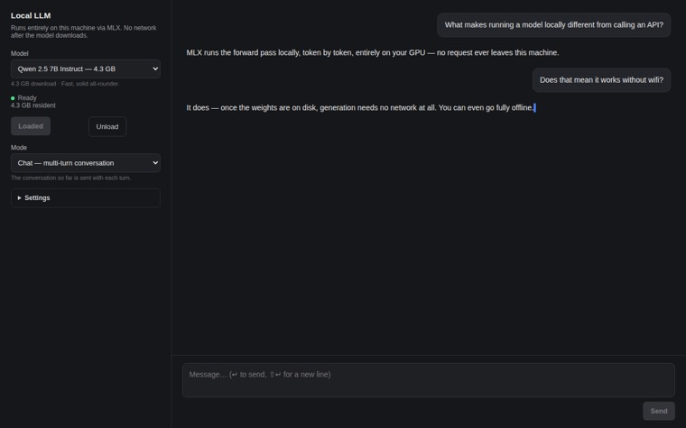
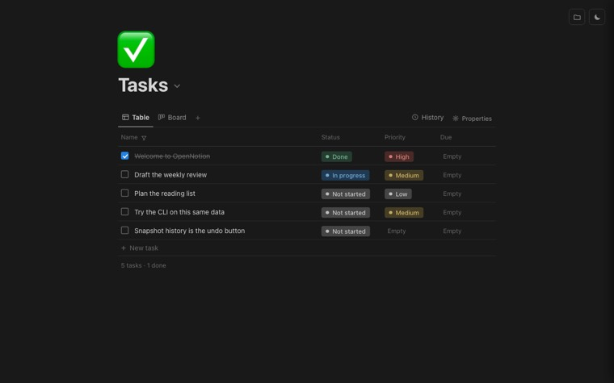
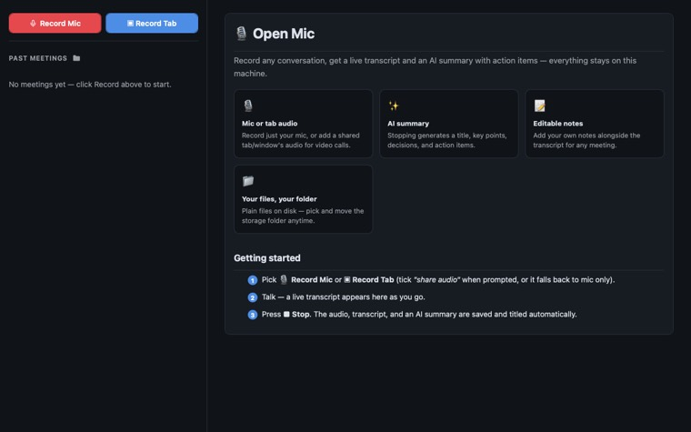
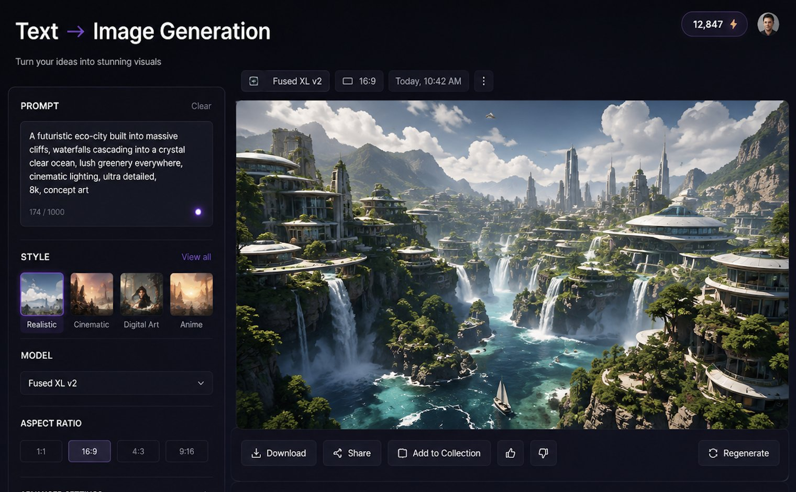
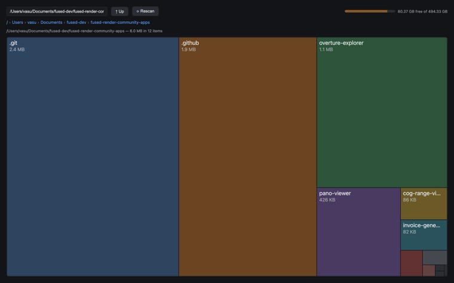
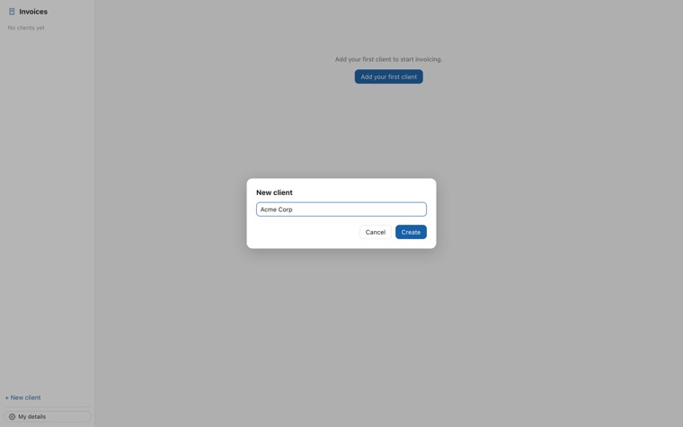

AI should run on your computer,
not someone else's.
Doing it yourself
With Fused Render
The download and the setup still happen — but they happen on their own, in the background. If a model turns out too big for your machine, it steps down and retries instead of asking you to start over.
Open one someone else made. Point it at your folder. Read the source first if you want.

Chat with a model running entirely on your machine. Streamed, with a tokens/s readout.

Notes and tasks, kept as files on your disk, with every edit's history preserved.

Record a meeting, watch the transcript appear, and let the local model write the summary.

Make images on your own machine. A studio, a parameter sweep, and a gallery of everything.

See what is eating your disk, folder by folder, and clean up safely.

Clients, numbered invoices, print-ready output. Your data stays a plain file on disk.
These six come with every copy, along with a dozen more. All of them are open source — you can read or change the code of any one.
Describe it in your own words. It writes the tool and keeps it.
Sits in your apps. Open it whenever you want the answer again.
.fused file. They open it, and it's theirs.
Half a million files indexed on one laptop. Type any fragment of a name and the answer is already there.
2024-renewal-memo.pdf
rename_media.py
batch-rename.sh
571,429 files · answered before you finish typing · nothing left the machine
Typing letters in order is enough — renme finds rename_media.py. Folders too.
Because a laptop is a small room, and these models are furniture.
A 16 GB laptop, mid-afternoon
And nothing can tell us how much room is really left. We ask the graphics driver; it does not answer.
What we did about it
So we try the biggest setting first and step down until it fits. On one real machine, the top rung fit — so that is where it stopped:
On a smaller card it keeps stepping — and the bottom rung is the surprise: less memory and more speed than the setting above it.
Nothing predicts that. You only find it by trying, on the machine in front of you, which is what happens the first time you load a model.
Where we haven't measured, we print that dash — never a zero. A zero reads as a real measurement of nothing.
Where your work goes
That last one is real, and we would rather say so. Writing a brand-new tool uses Claude Code, which runs in the cloud and needs an account. That step is the exception, not the rule.
The tool itself then runs here. If you build it on a local model it stays here entirely — and if it calls out to Claude instead, it says so, because you chose that when you made it.
One download. No account, no key, no card.
Building brand-new tools uses Claude Code, which has its own sign-in. Everything else — the apps, the local models, the search — needs nothing.